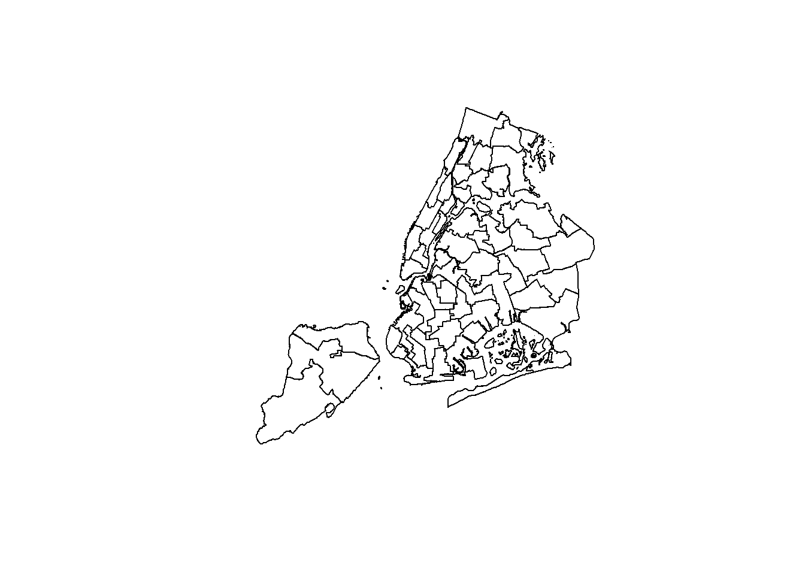
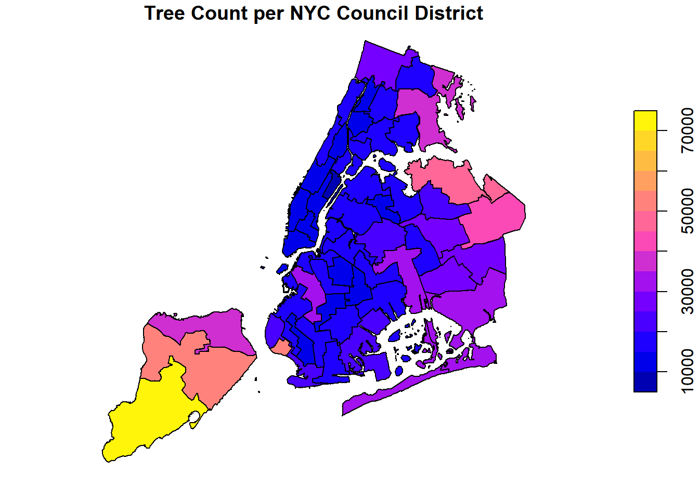

Visualizing and Maintaining the Green Canopy of NYC
INTRODUCTION
New York City’s street trees are one of the city’s most important environmental assets. They reduce urban heat, improve air quality, absorb stormwater, and contribute to neighborhood livability. Understanding how these trees are distributed and how well they are maintained is essential for guiding equitable investments in NYC’s green canopy.
This project explores the structure and condition of over one million street trees across the five boroughs using spatial data from the NYC Street Tree Census and city council district boundaries. Through spatial joins, density calculations, condition assessments, and proximity measures, we examine patterns of tree health, species distributions, and environmental needs at the district level.
The goal of this analysis is not only to visualize the city’s tree landscape but also to support data-driven recommendations for targeted tree care and investment. Using these results, we design a district-level proposal for the NYC Parks Department that advocates for strategic tree maintenance and planting—grounded in empirical evidence and supported by clear visualizations. # Data Acquisition
Show/Hide Code
library(sf)
Linking to GEOS 3.13.1, GDAL 3.11.0, PROJ 9.6.0; sf_use_s2() is TRUE
Show/Hide Code
library(dplyr)
Attaching package: 'dplyr'
The following objects are masked from 'package:stats':
filter, lag
The following objects are masked from 'package:base':
intersect, setdiff, setequal, union
Reading layer `nycc' from data source
`C:\Users\saoni\OneDrive\Documents\STA9750-2025-FALL\data\mp03\nycc.shp'
using driver `ESRI Shapefile'
Simple feature collection with 51 features and 3 fields
Geometry type: MULTIPOLYGON
Dimension: XY
Bounding box: xmin: 913175.1 ymin: 120128.4 xmax: 1067383 ymax: 272844.3
Projected CRS: NAD83 / New York Long Island (ftUS)
Show/Hide Code
plot(st_geometry(nycc))

NYC TREE POINTS
Show/Hide Code
library(httr2)library(sf)library(dplyr)library(glue)get_tree_points <-function(limit =50000, max_pages =5) { dir_path <-"data/mp03"if (!dir.exists(dir_path)) dir.create(dir_path, recursive =TRUE) base_url <-"https://data.cityofnewyork.us/resource/hn5i-inap.geojson" all_files <-list.files(dir_path, pattern ="^trees_\\d+\\.geojson$", full.names =TRUE) trees_list <-list() offset <-0 i <-1repeat { file_name <-glue("{dir_path}/trees_{offset}.geojson")message(glue("Starting batch {i} (offset = {offset})"))# Only download if not already presentif (!file.exists(file_name)) {message(glue("Downloading {file_name} ...")) resp <-request(base_url) |>req_url_query(`$limit`= limit, `$offset`= offset) |>req_perform() resp_body <-resp_body_string(resp)writeLines(resp_body, file_name)message(glue("Saved {file_name}")) } else {message(glue("File {file_name} already exists, skipping download")) }# Try to read data trees <-tryCatch(st_read(file_name, quiet =TRUE),error =function(e) {message(glue("Error reading {file_name}: {e$message}"))NULL } )if (is.null(trees) ||nrow(trees) ==0) {message("No more data to download — stopping.")break }message(glue("Read {nrow(trees)} rows.")) trees_list[[i]] <- trees offset <- offset + limit i <- i +1# Stop if fewer rows than the limit (end of dataset)if (nrow(trees) < limit) {message("Last batch smaller than limit — likely the end of the dataset.")break }if (i > max_pages) {message("Reached maximum pages allowed for testing (max_pages). Stopping early.")break } }message("Combining all downloaded data...") trees_all <-bind_rows(trees_list)message(glue("Combined total: {nrow(trees_all)} rows.")) # Combine all downloaded filesreturn(trees_all)}trees_sample <-get_tree_points(limit =5000, max_pages =2) #test run
library(dplyr)library(sf)# Spatial join: assign each tree to a council districttrees_by_district <-st_join(trees_all, nycc, join = st_within)# Count how many trees per districttree_counts <- trees_by_district %>%st_drop_geometry() %>%group_by(CounDist) %>%summarise(tree_count =n())# See the first few resultshead(tree_counts)
# Merge back with nycc to plotnycc_with_counts <-left_join(nycc, tree_counts, by ="CounDist")# Plot map of tree counts per districtplot(nycc_with_counts["tree_count"], main ="Tree Count per NYC Council District")

Data Integration and Initial Exploration
Show/Hide Code
library(ggplot2)library(sf)library(dplyr)ggplot() +geom_sf(data = nycc, fill ="gray95", color ="black", size =0.3) +# council district boundariesgeom_sf(data = trees_all, color ="forestgreen", alpha =0.3, size =0.05) +# tree pointslabs(title ="NYC Street Trees by City Council District",caption ="Data: NYC OpenData & NYC Department of Planning" ) +theme_minimal()
The closest tree to Baruch College is Callery pear (Pyrus calleryana)
Government Project Design
NYC Parks Proposal: Restoring and Revitalizing the Urban Canopy in Council District 32
Project Overview
Council District 32 has one of the largest tree populations in New York City — but it also carries the highest fraction of dead trees (14.2%) across all 52 districts. Dead street trees present safety hazards, reduce shade coverage during extreme heat, and diminish overall neighborhood quality of life.
This proposal requests targeted funding for a District 32 Tree Renewal Program, aimed at removing dead/dangerous trees and replacing them with climate-resilient species that strengthen our district’s tree canopy.
Project Scope
We propose the following activities for the upcoming planting cycle:
Remove 4,316 dead trees (based on latest NYC Street Trees data)
Grind and clear associated stumps (approximately 4,300 sites)
Plant 5,000 new climate-resilient trees, prioritizing species with strong survival rates such as thornless honeylocust, Japanese zelkova, and American elm
Perform risk assessments on an additional 1,000 trees classified as “Poor,” “Critical,” or “Unknown” condition in the tpcondition dataset
This scope focuses on stabilizing canopy health while ensuring long-term benefits for residents across Ozone Park, Howard Beach, and Rockaway neighborhoods.
Why District 32 Needs This Investment
District 32 stands out compared to other districts on several critical metrics:
Highest Proportion of Dead Trees
District 32: 14.2% dead trees
District 30: 14.0%
District 2: 13.6%
District 50: 13.5%
District 32 leads the entire city in this category, indicating an urgent need for maintenance and replanting.
Large Overall Tree Population
District 32 has 30,292 trees, placing it among the top ten districts in total canopy size. Investing in maintenance here yields large, citywide environmental returns.
High Exposure to Extreme Weather
Much of District 32 lies along the coastline (Rockaways, Broad Channel), where trees experience:
stronger winds
increased flooding
salt exposure
These accelerate decline and increase the need for routine replacement.
Conclusion
District 32’s combination of the highest proportion of dead trees, a substantial existing canopy, and greater environmental vulnerabilities makes it the best candidate for a concentrated investment. Funding the Tree Renewal Program will remove safety hazards, expand shade during summer heat, and revitalize one of NYC’s most environmentally stressed districts.
We respectfully request that NYC Parks allocate dedicated funding to launch this initiative in the upcoming fiscal year.
Supporting Visualizations
Dead Trees Table
Show/Hide Code
dead_by_district <- trees_joined |>group_by(CounDist) |>summarise(total =n(),dead =sum(tpcondition =="Dead", na.rm =TRUE),frac_dead = dead / total ) |>arrange(desc(frac_dead))dead_by_district